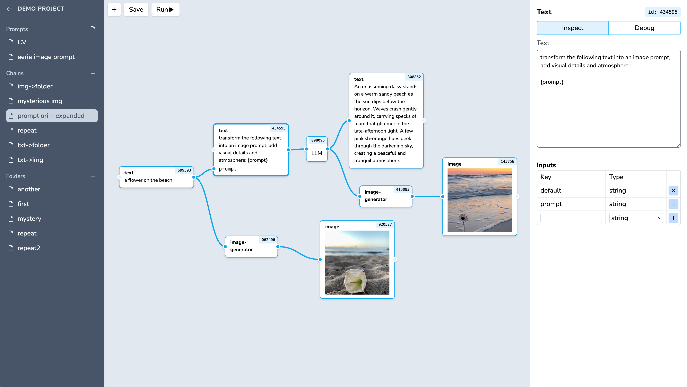

A visual editor to work with AI models. The core idea is Chains: a node-based interface for connecting different AI models together — chain text prompts, pipe outputs into image generators, and build multi-step workflows without writing glue code.